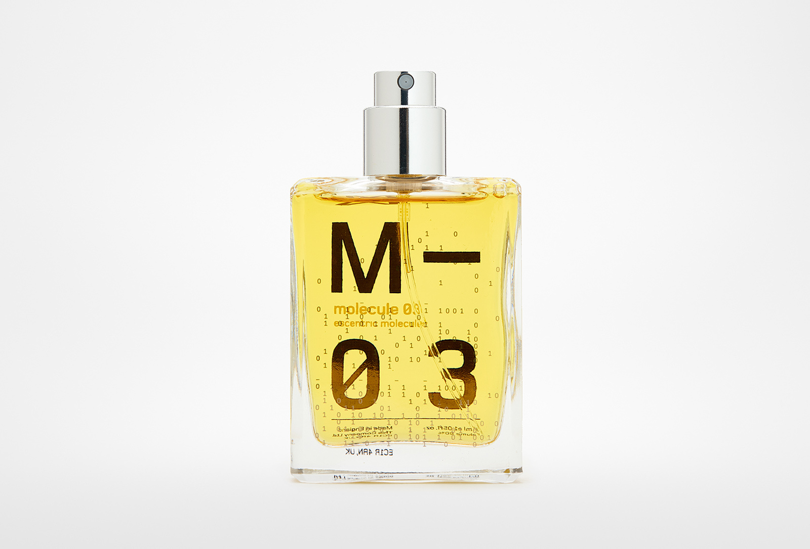

ESCENTRIC MOLECULES
molecule 03

ESCENTRIC MOLECULES molecule 03
Молекула 03 начинается со свежести древесных нюансов, которые сочетаясь с шипровыми мотивами, создают непревзойденную легкость. Такое очаровательное вступление – глоток свежего воздуха, который дарит ощущение невесомости. Сердце и финал композиции построены на экстраординарном ветивериле ацетате. Это уникальный запах, который раскрывается темпераментными специями, сочностью зеленой листвы, слегка вкрапляющейся смолистостью и отчетливо слышным аккордом древесины. Благодаря такому невероятному звучанию владельцам парфюмированной воды хочется творить, создавать яркие пейзажи вокруг себя. Именно обыденной легкости пытался достичь автор этой мелодии.
Характиристики
Тип продукта: туалетная вода
Для кого: унисекс
Группа ароматов: древесные
Страна бренда: Германия